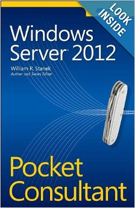
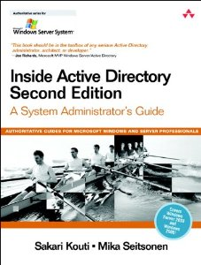

Table of Contents
- Anyone who wants to be a System Administrator,
- Novice System Administrators just getting into the field,
- Junior System Administrators who want to make sure their foundation is solid for advancement to more senior levels,
- Intermediate/Advanced/Senior System Administrators advancing to more senior levels,
- Trainers and Educators of Systems Administration
This is a guide to the professional literature of the field of System Administration.
This document does not include practice exercises. However, practical experience is essential to success in the field. The student is encouraged to practice.
Thanks for help in compiling this list to: Jonah Sinowitz, Eric Sorenson, Mark Burgess, Shahab Shawn Sheikhzadeh, Willard Dennis, Kyrre Begnum, david t. klein, Avleen Vig, William van Hevelingen.
Comments welcome! Email the editors at feedback@sabok.org or join us in the ops-education group.
The materials should be studied and practiced in sequence.
Core contains essential reading - the fundamentals of the field.
Normative literature attempts an overview of normative literature - publications that lay out the norms of the field, or what is generally agreed upon (i.e. best practices). Norms and standards are essential for professionalization.
Advance your knowledge using the Advanced Study list.
| Burgess, Mark. Principles of Network and System Administration, 2nd ed.. Hoboken, NJ: Wiley, 2004. Print. ISBN-13: 978-0-470-86807-2 This is a introductory college text, written by the creator of a well-known configuration management tool (CFEngine) while he was teaching Systems Administration at Oslo University College in Norway. |
Limoncelli, Thomas A., Christine Hogan, and Strata R. Chalup. The Practice of System and Network Administration: Volume 1, 3rd ed. Addison-Wesley, 2016. Print. ISBN-13: 978-0-321-91916-8 A comprehensive overview of the practice of system administration. Written by system administrators for system administrators. (Volume 1 of 2.) https://www.amazon.com/Practice-System-Network-Administration-Enterprise/dp/0321919165 | |
Limoncelli, Thomas A., Christine Hogan, and Strata R. Chalup. The Practice of Cloud System Administration: Volume 2. Addison-Wesley, 2014. Print. ISBN-13: 978-0321943187 https://www.amazon.com/Practice-Cloud-System-Administration-Practices/dp/032194318X |

| Smith, Roderick W. Linux Essentials Indianapolis, IN: Wiley, 2012. Print. An introduction to Linux and Open Source. http://www.lpimarketplace.com/ProductDetails.asp?ProductCode=978-1-118-10679-2 |
| Elsner, Tobias et al. Linux Essentials: The LPI Introductory Programme Darmstadt, Germany: Linup Front, 2012. An alternative introduction to Linux and Open Source. Courseware for LPI Linux Essentials program. Free for non-commercial use. |
| Shotts, William. The Linux Command Line: A Complete Introduction First Edition. San Francisco: No Starch, 2012. Print. (Electronic version, 2016.) https://sourceforge.net/projects/linuxcommand/files/TLCL/16.07/TLCL-16.07.pdf/download Shotts, William. The Linux Command Line: A Complete Introduction Second Edition, 2016. http://linuxcommand.org A complete introduction to the Linux Command Line. We have started to recommend this book instead of the dated "The UNIX Programming Environment". Available in PDF and print versions. |


Nemeth, Evi et al. Unix and Linux System Administration Handbook, 4th ed. Upper Saddle River, NJ: Prentice Hall, 2012. Print. "This is a comprehensive guide to the care and feeding of UNIX and Linux systems. The authors present the facts along with seasoned advice and real-world examples." — Pat Parseghian Fifth edition coming August 2017: https://www.amazon.com/UNIX-Linux-System-Administration-Handbook/dp/0134277554 | |
Frisch, Æleen. Essential System Administration, 3rd ed. Sebastopol, CA: O’Reilly, 2002. Print. | |
| The FreeBSD Documentation Project, The FreeBSD Handbook Online: 2013. |
| Solter, Nicholas A., Jerry Jelinek, David Miner. OpenSolaris Bible Hoboken, NJ: Wiley, 2009. |


- "An Introduction to the Unix Shell" by S. Bourne, author of the Bourne shell (sh) http://steve-parker.org/sh/bourne.shtml
- Steve Parker’s shell scripting tutorial http://steve-parker.org/sh/sh.shtml
- Unix Programming Environment http://www.amazon.com/Unix-Programming-Environment-Prentice-Hall-Software/dp/013937681X
- Linux for Dummies http://www.dummies.com/store/Computers-Internet/Operating-Systems/Linux.html
- Linux Pocket Guide http://oreilly.com/catalog/9780596006280/
- Learning the bash Shell http://oreilly.com/catalog/9780596009656/
- Linux in a Nutshell (2009 edition) http://oreilly.com/catalog/9780596154486/
| Kernighan, Brian W., and Rob Pike. The UNIX Programming Environment. Englewood Cliffs, NJ: Prentice-Hall, 1984. Print. http://www.amazon.com/Unix-Programming-Environment-Prentice-Hall-Software/dp/013937681X Chapters 1 - 6 introduce a new user to UNIX. If you want to make sure your fundamentals are fully established, go back to the source, the origin of UNIX. |

Robbins, Arnold, Elbert Hannah, Linda Lamb, and Linda Lamb. Learning the vi and Vim Editors: Text processing at maximum speed and power, 7th ed. Sebastopol, CA: O’Reilly Media, 2008. Print.
| |
Stallman, Richard, et al. GNU Emacs Manual. Boston: Free Software Foundation, 2013. Online. GNU Emacs is the "the extensible, customizable, self-documenting, real-time display editor." |
Zamboni, Diego. Learning CFEngine 3. Sebastopol, CA: O’Reilly, 2012. | |
Krum, Van Hevelingen, Kero, Turnbull, McCune. Pro Puppet. New York, NY: Apress, 2013. |
Learning Perl | |
Automating System Administration with Perl | |
Learning Python | |
Programming Python |
| Tulloch, Mitch. Training Guide: Installing and Configuring Windows Server 2012. Redmond, WA: Microsoft Press, 2012. |
 | Stanek, William R. Windows Server 2012 Pocket Consultant. Redmond, WA: Microsoft Press, 2012. |

Desmond, Brian; Joe Richards, Robbie Allen, Alistair Lowe-Norris. Active Directory, 5th Edition, Sebastopol, CA: O’Reilly, 2013. Print. Generally accepted as the best book on Microsoft Active Directory, which is Microsoft’s implementation of LDAP + Kerberos. | |
 | Kouti, Sakari and Mika Seitsonen. Inside Active Directory: A System Administrator’s Guide, (2nd Ed.) Boston: Addison-Wesley Professional, 2004. Print. An older classic on AD, goes into the internals. |
| Jones, Don and Jeffery Hicks. Learn Windows PowerShell 3 in a Month of Lunches, Greenwich, CT: Manning, 2013. Print. "This book is a tutorial designed for busy administrators. Just set aside one hour a day for a month and you’ll learn all the practical techniques you need to make your job easier and your day shorter. This totally revised second edition covers new PowerShell 3 features designed for Windows 8 and Windows Server 2012. Experience with Windows administration is helpful. No programming experience is assumed." The first edition (Learn Windows PowerShell in a Month of Lunches) covers PowerShell v2.0. |

Soft skills are increasingly recognized as essential to success in system administration.
- Hard skills
- Working with technology.
- Soft skills
Working with people. This includes communication (including writing RFPs, presenting, etc.), project management, time management, persuasion, leadership, cooperation, business alignment, learning how to learn (and teach), etc.
- Time Management for System Administrators by Tom Limoncelli
- A Sysadmin’s Guide to Navigating the Business World by Burgess and Rowland, USENIX Short Topics on Systems Administration, 2010 (ISBN 978-1-931971-81-2)
- OpsSchool "Soft Skills" page
Literature describing norms or standards
- Ops Report Card by Tom Limoncelli and Peter Grace.
- The Systems Administration Site Assessment Checklist by Geoff Halprin
- RFC 1178: Choosing a Name for Your Computer
- On Designing and Deploying Internet-Scale Services by James Hamilton, LISA 1997 paper This paper summarizes a set of best practices for designing and developing operations-friendly services.
- USENIX LISA Short Topics in System Administration


- Burgess, Mark. Computer Immunology http://static.usenix.org/event/lisa98/full_papers/burgess/burgess.pdf (1998)
- Burgess, Mark. On the Theory of System Administration http://markburgess.org/papers/sysadmtheory3.pdf (2003)
- "Handbook of Network and System Administration", Edited by Jan Bergstra and Mark Burgess. November 2007.
- Burgess, Mark. In Search of Certainty
- Burgess, Mark. Analytical Network and System Administration. This is a very advanced text.
- Burgess, Mark. Exercises for Analytical Network and System Administration.
- Slawek, Ligus. Effective Monitoring and Alerting: For Web Operations Sebastopol, CA: O’Reilly
- Schlossnagle, Theo. Scalable Internet Architectures Sams Publishing, 2006. Print.
- Allspaw, John and Jesse Robbins. Web Operations: Keeping the Data On Time Sebastopol, CA: O’Reilly, 2010. Print.
- Moskowitz, Adam. "The Path to Senior Sysadmin" talk. USENIX LISA Conference, 2010.
- Gregg, Brendan. Systems Performance: Enterprise and the Cloud
- Brendan Gregg’s Recommended Reading list
- Kim, Gene, Kevin Behr, and George Spafford. The Phoenix Project: A Novel about IT, DevOps, and Helping Your Business Win. Portland, OR: IT Revolution, 2013. Print.
- Kim, Gene, Paul Love and George Spafford. Visible Ops Security IT Process Institute, 2008. Print.
- Behr, Kevin, Gene Kim, and George Spafford. Visible Ops Handbook IT Process Institute, 2005. Print.
- Kurose, James F. and Keith W. Ross. Computer Networking: A Top Down Approach 5th Ed. Pearson, 2010. Print.
- Topping. Errors of Observation and their Treatment
- Yourdon, Ed. Just Enough Structured Analysis - a basic systems engineering text
- ?? Need something for troubleshooting ??